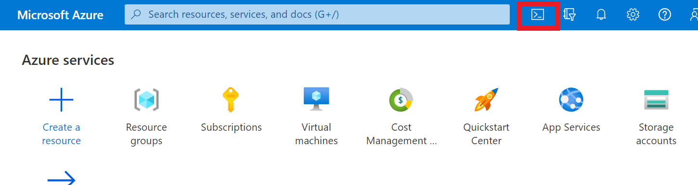

大手 3社のクラウドにて同じことをやっています。 宜しければご覧ください 👀✨
【AWS EC2】CLI で Web サーバ(NGINX)を構築してみた
【Google Cloud】CLI で Web サーバ(NGINX)を構築してみた
目次
やること
- Azure 上で Ubuntu の VM を立てる
- VM に NGINX をインストールし、Web サーバとして設定
- OS 起動時に NGINX が自動起動するように設定
- AccessLog が記録されていることを確認
- HTTP Status Code: 200 が返ることを確認
- VM を削除する
これを CLI でやるときの手順を以下に記載していきます。
VM 構築手順
-
画面右上の「Cloud Shell」からターミナルを開く

-
リソースグループを作成
$ az group create --name [resource group name] --location [場所名]az account list-locations -o tableで場所一覧が表示される
→ 場所名にはこの一覧の"name"の値を入れる
-
VMを新規作成
$ az vm create -n [vm name] -g [resource group name] --image UbuntuLTS --admin-username user01 --generate-ssh-keys
NGINX による Web サーバ構築設定手順
-
VM に SSH 接続
$ az ssh vm -g [resource group name] -n [vm name] --local-user user01
-
VM に NGINX をインストール
$ sudo apt-get update $ sudo apt-get install nginx
-
NGINX 自動起動設定
$ sudo systemctl enable nginx.service
-
VM を再起動
$ sudo reboot
-
再起動で VM との接続が切れるので、SSH 再接続
$ az ssh vm -g [resource group name] -n [vm name] --local-user user01
-
NGINX が自動起動していることを確認
$ systemctl status nginx.service→
Active: active (running)という文面が確認できればOK
-
VM から出る
$ exit
-
ポート80を開く
規定では SSH 接続しか開かれていないので、NGINX Webサーバ用に TCP ポート80を開く$ az vm open-port --port 80 --resource-group [resource group name] --name [vm name]
HTTP Status Code の確認方法
- HTTP Status をリモートで確認（今回は自 PC の bash から確認した）
→ 値が返ってくるので以下が確認できればOK$ curl -v [外部IP]< HTTP/1.1 200 OK
AccessLog の確認方法
-
NGINX の設定ファイルの中身を表示し、AccessLog ファイルの位置を調べる
$ cat /etc/nginx/nginx.confファイル内の以下の文面から確認
## # Logging Settings ## access_log /var/log/nginx/access.log;
-
AccessLog ファイルを確認
cat /var/log/nginx/access.log→ サーバにアクセスした履歴が残っていることを確認
VM 削除手順
-
VM を削除
$ az vm delete -g [resource group name] -n [vm name]Resource group全体が消えるわけではなく、VMのみが削除されることに注意
Resource groupごと削除したい場合は以下のコマンド$ az group delete -n [resource group name]
-
現在立てられている VM の一覧を表示させ、VM が削除されていることを確認
$ az vm list削除した VM が表示されていなければ OK
まとめ
クラウド CLI での Web サーバ構築第二弾として、Azure Virtual Machines での手順をまとめました。
次回はラストで、 Google Cloud にて同様の作業に挑戦です！
こちらのブログは初心者エンジニアが勉強の記録やアウトプットの一環として執筆しております。
内容に誤りがある可能性が多大にありますのでご了承ください。